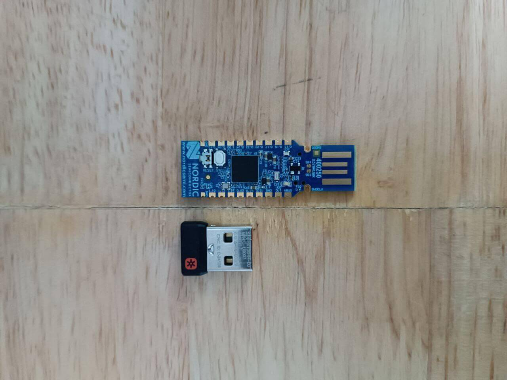

USB Samurai
The club, Team bi0s have specialized teams focusing on various areas in cyber-security like ...
The team was formally launched as a CTF team in 2007 under the mentorship of Vipin Pavithran, a faculty at Amrita's Centre for Cyber Security. It was among the first CTF team from India, and ever-since has been spearheading CTFs in the country - from starting InCTF, India's First CTF and consistently ranking No.1 in CTFTime since it was established. Over the years, the team has evolved into a cyber-security research group, with specialized teams in 10+ cyber-security focus areas.
The bi0s Hardware specializes in hardware cyber security. Members of this team have expertise in ...
- bi0s CTF
- bi0s Hardware
- Bi0s Pentest
- cyber-security enthusiast club and
- research group
- from Amrita Vishwa Vidyapeetham (University), India.
The team was formally launched as a CTF team in 2007 under the mentorship of Vipin Pavithran, a faculty at Amrita's Centre for Cyber Security. It was among the first CTF team from India, and ever-since has been spearheading CTFs in the country - from starting InCTF, India's First CTF and consistently ranking No.1 in CTFTime since it was established. Over the years, the team has evolved into a cyber-security research group, with specialized teams in 10+ cyber-security focus areas.
The bi0s Hardware specializes in hardware cyber security. Members of this team have expertise in ...
- Embedded Systems
- Firmware Analysis
- Wireless Security
- Automotive Security
- ICS/SCADA Security
- Side Channel Analysis etc.

What do we do ?
Here are some of the things our members do:
- Learning & Researching on various Cyber Security fields
- Participating & organizing CTFs across the world
- Organizing workshops & training programmes
- Contributing to open-source security tools
- Designing and testing hardware security modules
- Collaborating in international cyber-security research projects
- Penetration testing, bug-bounty hunting & submitting CVEs
- Providing Cyber Security Consultancy Services
